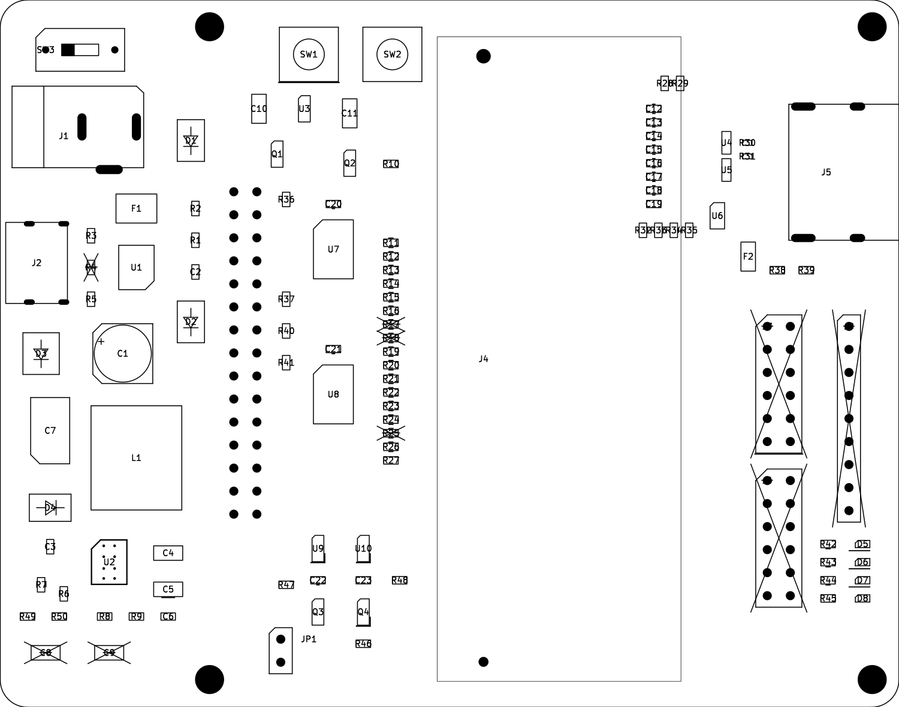
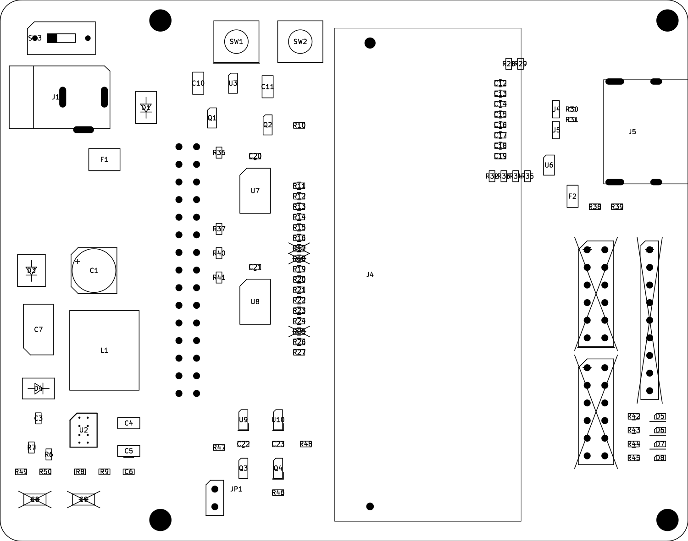

案A 99×78 mm
方法 1・2・6・7＋ソケット変更
HDMI実装／USB PD＋バレル
PCBA 94部品・38品目
5枚参考 $103.75〜131.58＋S

Gerber ZIP ／ BOM ／ 部品位置
2026年10月25日。現行版を保持した別設計。
必須通信・電源の検査に加え、親側で回路図とPCB、ソケット全204端子、実装設定、BOMと部品位置、製造データの版一致を独立確認しました。実機動作を確認した結果ではありません。
方法 1・2・6・7＋ソケット変更
HDMI実装／USB PD＋バレル
PCBA 94部品・38品目
5枚参考 $103.75〜131.58＋S

Gerber ZIP ／ BOM ／ 部品位置
方法 1・2・5・6・7＋ソケット変更
HDMI実装／バレルのみ
PCBA 86部品・34品目
5枚参考 $89.81〜117.65＋S

Gerber ZIP ／ BOM ／ 部品位置
方法 1・2・3・5・7＋ソケット変更
HDMI・PDは回路を残してDNP／バレル使用
PCBA 58部品・27品目
5枚参考 $104.34＋S
Gerber ZIP ／ BOM ／ 部品位置
Tab5との8bitパラレル通信、Coreへの独立5V、バスの電源断保護と両電源監視を保持。Core上DDR3を使うLinux／GPU用途の共通キャリアです。ソケットは全案PCBAに含め、Core本体はユーザー支給。バレル・M5-Bus等の手実装一覧も確認してください。
Aは自動配線とGND局所補修、BはAの検証済み小型配置を共通化してPD専用部を除去、Cは現行125mm版の局所変更で完成させました。
HDMIの510Ωへの変更感度は小さい一方、Core85Ω・ESD差動0.5pFの例では自主反射目標−10dBを外れます。新ソケットの未校正L/Cを置いた感度例でも悪化する条件があり、HDMI規格適合や全機器動作保証とはしません。詳細は共通設計仕様と27条件の解析結果に記録しています。
金額は5枚の比較計算で、正式再見積ではありません。Sは必須ソケットの調達・実装・治具等の未確定費。送料・税・Core本体・手実装部品は別です。幅は主にPCB特価の適用有無によります。